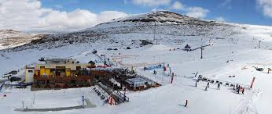

I love to go skiing every winter with my family. Before i go to skiing, I check if have all the equipment and clothes I need to ski. I also wear a helmet, ski boots, ski pants and a ski jacket. Chess is another sport which I enjoy most, in fact, I have alot of interest in it.
I also use ski poles to control my balance. Some people ski go faster, but I ski to have fun. What I enjoy most about skiing is that I can enjoy the fresh air and nice views. Another sport that i entertain most is Football, It makes me to forget everything that I am stressful about. It also helps me to exercise so that I can remove exccess minerals such as sweat and many more. It also helps me in increasing heart rate, which leads to good flow of blood.
back next